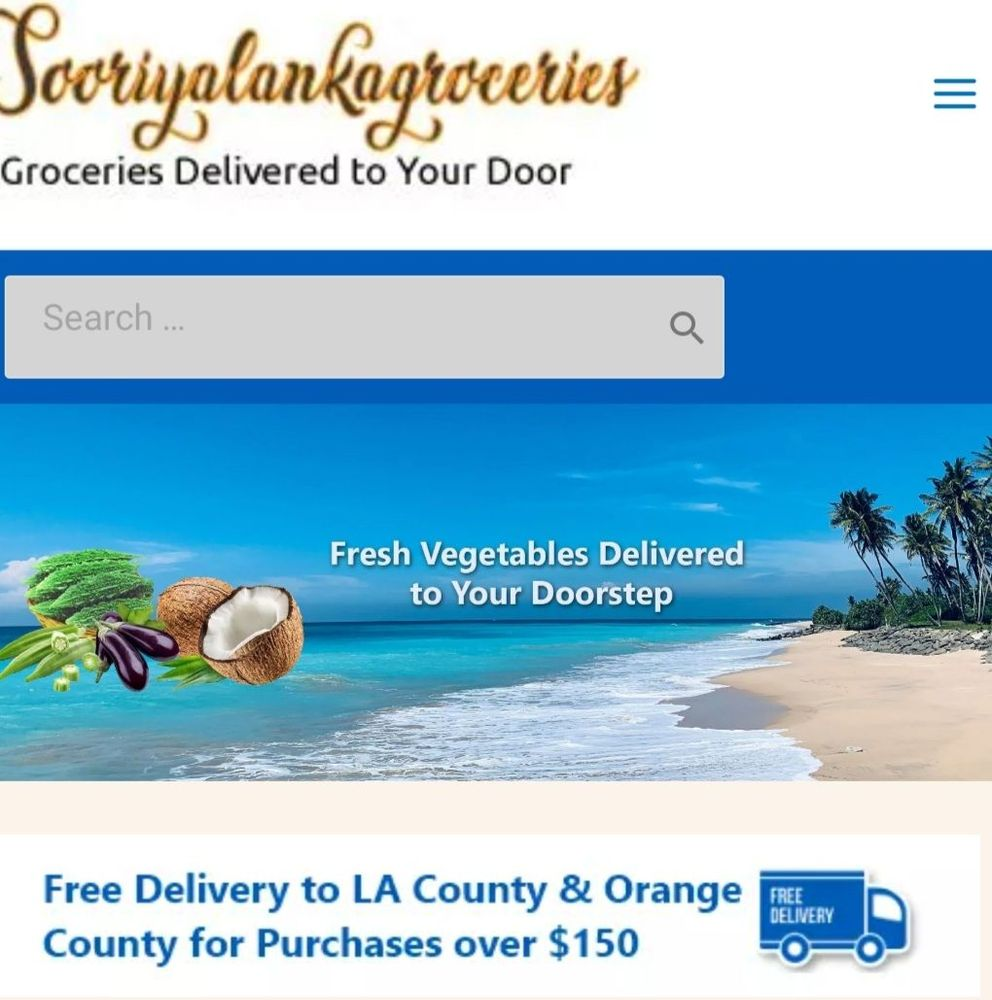
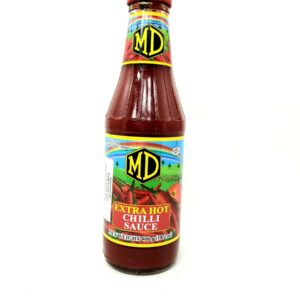
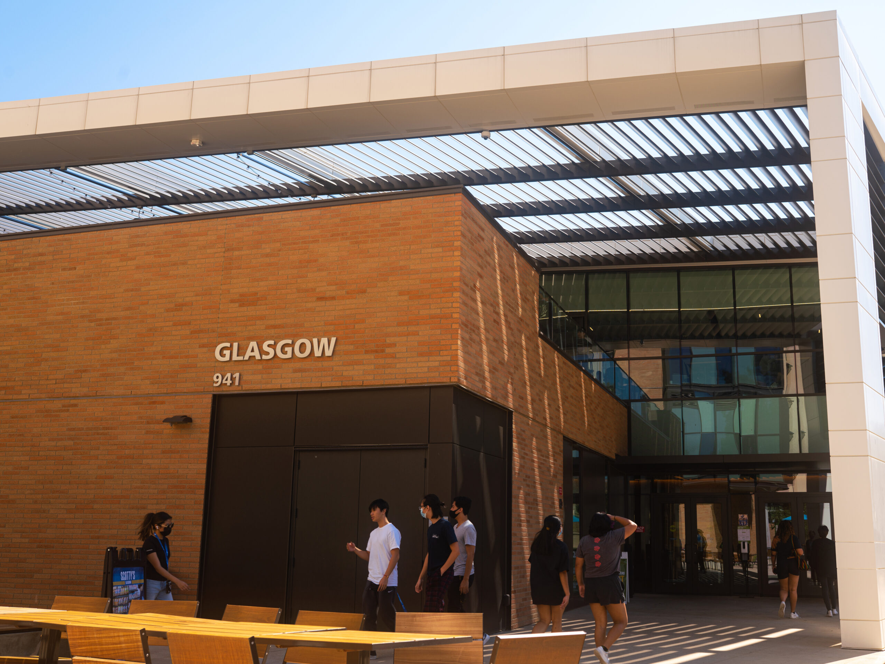
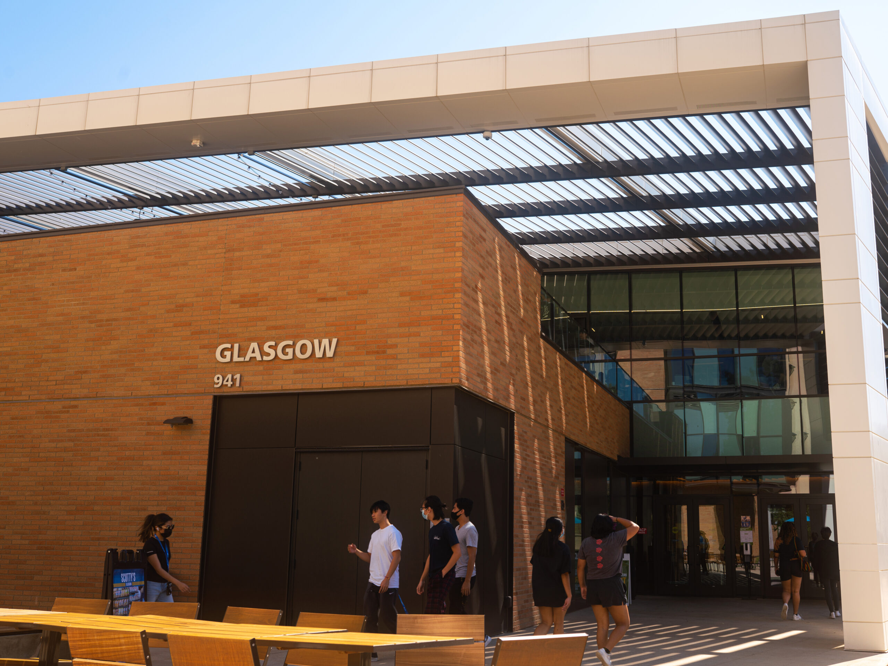
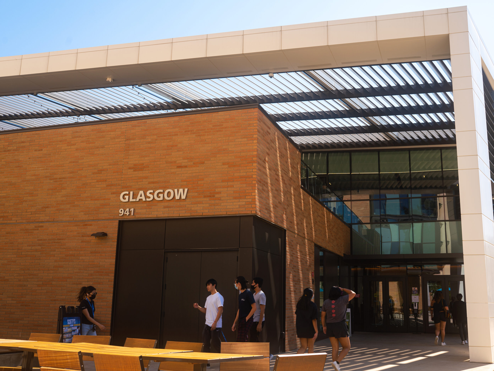

Roshell Wickramasinghe
I am a ninteen year old who is very indeed passionate about improving myself to be a better version of myself. I always invest in mysef to grow as a person and a student. I always have mindset that tells me what can I do better. I had a battle with my head at one point. Where I felt like I coundn't escape.Until I really dug myself out to see the light.I had people tell me I won't make in life. I was bullied based on how I sound, looked liked, and even my height. It was battle of finding my own worth. Then, I invested myself to be connected with my myself. I have lost so many people in my life. Making me believe that I am curse to soicty. It sounds crazy, but I thought I was the grim reapper killing everyone out. Or even I felt like medusa, I turned everyone to stone. However, I am very lucky to have such amazing parents. My parents are both from Sri Lanka. Which makes me first generation in Cailfornia. For most of my life English was my primary lanuage, however not everyone belived that. Honestly, I use to hate what I looked like because I wasn't good enough. Throughout my primary and secondary school years there wasn't that many brown kids like me. There were a lot of other races though. But I was lable the nice kid. Which really translate to people pleasing. I never really wanted to admit that I was, but seriously I was. I will always help others if they needed and even have people thoughts influense my mind. I never really thought for once. I alwasys thought what others thought of me and i also put my talents down the drain. I never really felt I had anything going. Not just from my peers, but from teachers as well. The would always seem to look at me as if I was crazy. I used wanna be an actor, but they always seemed to mentioned that you won't make it if you can't do this problom. However that never really crushed the one dream I still have till this day. I want to leave my mark on this world. Despie what people say I keep going. As a full-time college student I'm always busy, but I manage to keep my head up high. I manage many assignments, going to lecture, and an part-time job. Although, I don't need a job, I was have the will to push myself to try something. I really find myself investing in self care and my growth as an indivial. However, this year has been the year of change for the better. I would have say it was all from my first relationship that ended about two to three months. Too keep it short and sweet. I thought we broke up mutally, but it turn out he was talking behind my back to one my friends whom I introduced him to.
Moving on, I have found myself connecting back to my religon, christanity, and it has made sificant impact on my life. From the first thing in the morning to last thing I do before I go to bed. It was through this break-up I found my true worth and no the lies he had fed me. I found myself seeing the light in each day and not a day of what ifs. Although he broke my heart, I still found grattiude in the new day that arises in front of me. However, it is not say I don't have days. However, instead of numbing me feelings when I was in the relationship, I let myself fall apart without feeling selfish to feel. However, I will pick myself right up, all by myself. I always find it great to meet new people and create a relationship. I really do value meeting others because I found to really exponentially grow my value. Also seeking out an adventure can also help with that. With a positive attitude, I faces each day with enthusiasm and determination. I really do believes the power of kindness can inspire the world wide. I am a strong believer that everyone has goddness in them. I like call it light. We are all born. with it and it's up to us to let that light consummes us. I always have been a strong believer of there is good in everyone, even the worst of people. Next, I love trying new things. Even if it's diffcult, I will go and try. I am always willing to try thing even if they push me out of my comfort zone. And that is fun to me. These activities not only provide me with entertainment but also inspire my creativity and broaden my perspectives. Although I should be focusing in college. I always make time for a vairety of hobbies, taking care friends, or family, self care, self growth. Even reading. Reading really helps me expands me in a new whole level as well movies/video games. One thing, to know about me is that goals I keep a list on. These goals are not just stand there to look pretty, but it is there to keep me forward. Although some seem unatainable, but I know I will make it. I am afraid, but I won't let it control me. For instance, I been thinking about creating a youtube channel with actually videos, but I did and I will be starting pretty soon. This was the one-time after a long time I felt fear control me, but I reminded myself what I can do this. However, I did have a friend who really encourged me to push myself futher. So, I am hoping I am able to do it. Why youtube? It's because I really enjoy creating content for people to relate to. Also, to make people feel less alone in the world. I know it's going to be hard, but I am ready to do it.
Now closing off, I would have say that I am quite dillgent, kind, and passionate who really puts self-growth and put my dreams first. Although, I had battle within myself as a child and had constantly people telling me that I couldn't make in life. I proved them all wrong. Even the devil that tries to knock me down again into that whole of despire. It is through my academic life, my part-time job, my interests, and lifetime goals that drive me and nobody can knock me down. Although, you might tell me to get off my high horse or my pedestal. I am not on any of those. I am certeinly on living in my heart. I may not be perfect, but who is anyway. I will always drive to pursure my dream of inspire others to prioritize their own well-being and follow their dreams. The devil may make me fall and tell me that I don't deserve anything, but I am worth it. Nobody isn't going take that power away from me. I will continue learn and humble myself against the world. I am not going live by pleasing others and letting their words determine what kind life I am suppose to live. I am going to live. I may have my heart broken and I don't know when it will be filled again, but the person who broke surely didn't deserve me at all. I know my worth than he ever showed me. I shouldn't have my thoughts filled with what ifs. Instead it is full of what I can do better. I will conutine my future with my head up high and smiling knowing that future of chaining people lives is going to be here. It is like the saying of "People will always constantly talk and that is all they are good for. I believe in my fate that is ahead me. You know why? It is because am creating my future everyday with the desicions I make. It may be sound chessey, but guess what it's when it's chessy that it's the truth. That is something I found out. Because isn't the chessy things we laugh at first and then later it humbles us. And that is exactly that is happening right now. I navigates through life with a positive mindset and a drive for success. As a university student, I dedicates myself for my academics s and embraces the challenges of higher education. With a deep curiosity for learning and it never seems to end. Because I keep this question in my head. And you should keep this question in your head as well. Also, it maybe a question that will humble you everyday before you go to bed or close off for the night. The question is: "If I died right now, did I do everything I ever wanted do in my life?" This is not a question to make you overthink in your sleep, but to learn to live with no regrets.
Experience
Head Cashier
• Stock new products on shelves
• Customer servies
• Experience with working with a cashier
Glasgow's Worker
• Responsible for cleaning dishes
• Restocking beverages, food, cups, plates, and ect.
Education
UC Riverside
University of California
Harvard Law School University
Portfolio


 

